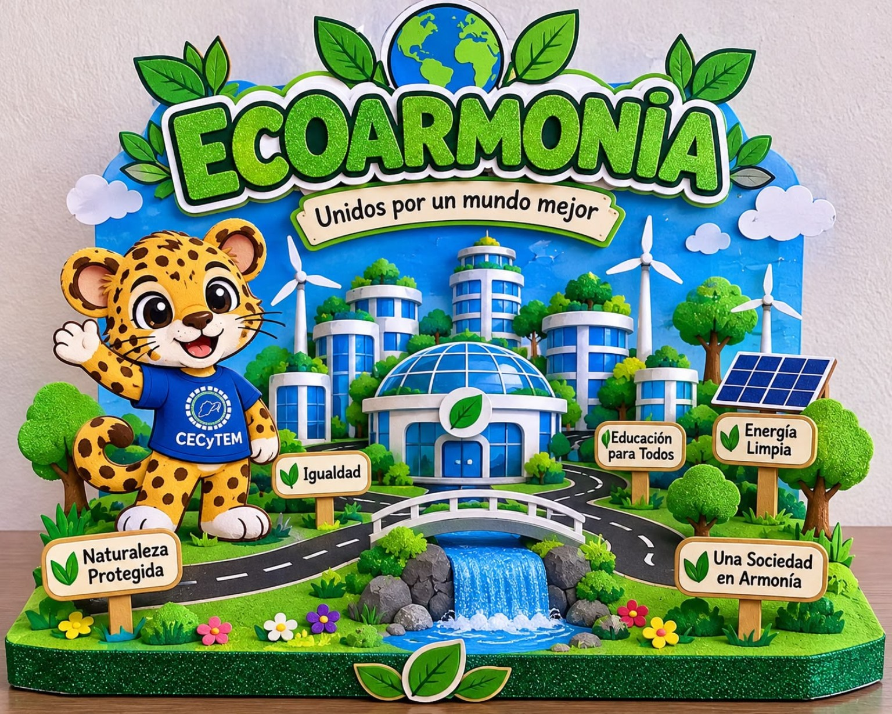
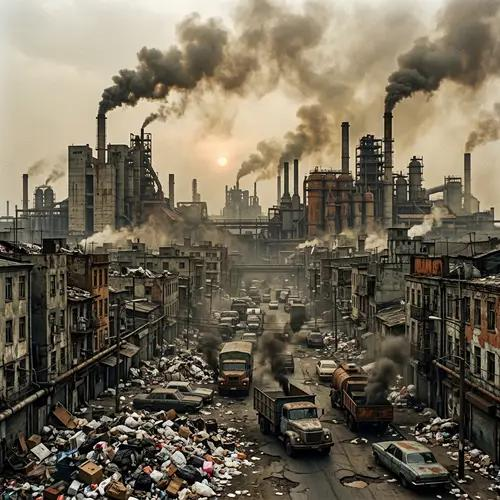
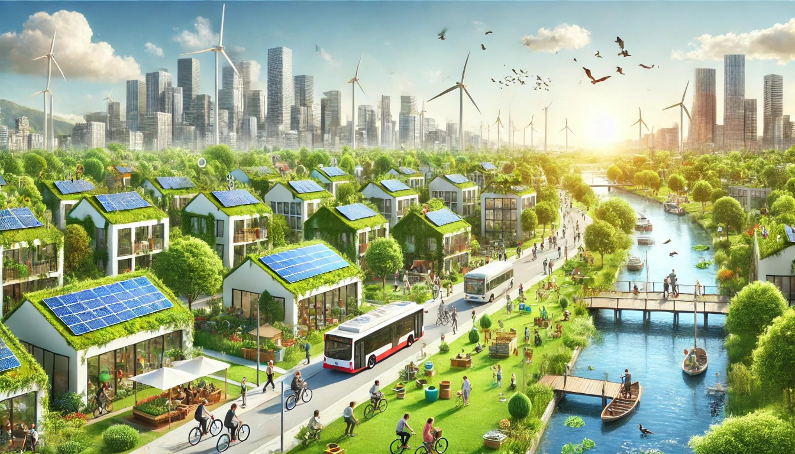

Día de la Naturaleza
Plantación de árboles y limpieza de espacios.
01 — Portada · CECyTEM presenta
Una nueva forma de vivir, convivir y transformar el mundo.
CECyTEM
Conoce nuestra propuesta
Pulsa un tema para leer su contenido en una ventana flotante.
Nuestra propuesta
Ecoarmonía es una sociedad creada con la misión de construir un mundo más justo, pacífico y sostenible, donde se busca que la naturaleza y las personas vivan en equilibrio.
Nace como una propuesta para transformar los problemas de la sociedad actual, como la desigualdad, la contaminación y la falta de oportunidades, mediante la educación, la participación, el respeto y la solidaridad.
Participación ciudadana
ECOARMONÍA tendrá un gobierno democrático y participativo, donde todos los ciudadanos podrán elegir a sus representantes, expresar sus opiniones y participar en las decisiones importantes.
Bienestar compartido
En ECOARMONÍA el dinero no será más importante que las personas.
Todos tendrán acceso a alimentación, vivienda, educación, comercio justo y sostenibilidad.
Acuerdos para convivir
La comunidad
Los habitantes de ECOARMONÍA se caracterizan por ser solidarios, respetuosos, responsables de sus acciones y empáticos.
Se preocupan por los demás, colaboran en su comunidad y buscan solucionar sus diferencias mediante el diálogo, evitando la violencia y la discriminación.
Valores que nos guían
La moral de ECOARMONÍA se basa en las costumbres y valores que orientan el comportamiento de sus habitantes.
La ética permite reflexionar sobre lo que es justo, correcto y responsable.
Los ciudadanos actuarán con honestidad, respeto, empatía, responsabilidad y solidaridad, buscando siempre el bien común.
Escucha y cooperación
En ECOARMONÍA, los problemas se solucionan mediante el diálogo, la cooperación y la participación de todos.
Se escuchan diferentes opiniones, se buscan acuerdos y se toman decisiones pensando en el bienestar colectivo.
Naturaleza y tecnología
ECOARMONÍA es una ciudad moderna, limpia y rodeada de naturaleza.
Cuenta con:
Busca que sus edificios utilicen energías renovables y tecnologías que ayudan a cuidar el medio ambiente.
Celebraciones comunitarias
En ECOARMONÍA se celebran actividades que fortalecen la unión de la sociedad:
Plantación de árboles y limpieza de espacios.
Música, danza, comida y tradiciones.
Actividades para ayudar a quienes lo necesitan.
Reunión para proponer ideas y mejoras.
Los valores principales son la justicia, la libertad, el respeto, la igualdad y la solidaridad.
Libertad de expresión
Ropa: Las personas podrán vestir libremente, utilizando prendas cómodas, de cualquier estilo y elaboradas con materiales sostenibles, sin prejuicios ni discriminación.
Música: Existirá libertad musical. Se promoverán todos los géneros, las expresiones artísticas y la música de diferentes culturas.
Igualdad de derechos
En ECOARMONÍA todas las personas tienen los mismos derechos y oportunidades, sin importar su género.
Oportunidades para todos
La desigualdad será combatida garantizando que todas las personas tengan acceso a la educación, la salud, la vivienda, la alimentación y empleos dignos.
ECOARMONÍA busca que nadie sea excluido por su situación económica y que todos tengan la oportunidad de construir un futuro mejor.
Tecnología al servicio de las personas
La inteligencia artificial se utilizará para mejorar la vida de las personas, facilitar la educación, apoyar la medicina y cuidar el medio ambiente.
Su uso deberá ser responsable, transparente y respetuoso de la privacidad.
La tecnología estará al servicio de la humanidad, nunca por encima de sus derechos.
Cuidar nuestro hogar
La ética medioambiental consiste en reconocer la importancia de respetar, proteger y cuidar la naturaleza.
En ECOARMONÍA:
Respeto por la vida
La bioética se encarga de reflexionar sobre los valores y principios relacionados con la vida, la salud y los seres vivos.
En ECOARMONÍA se garantizará:
Libertad y justicia
En ECOARMONÍA buscamos evitar que nuestra sociedad se convierta en un lugar donde existan injusticias, desigualdad o falta de libertad.
Para lograrlo, es importante que todos podamos expresar nuestras opiniones, que las autoridades cumplan con sus responsabilidades y que nadie tenga más derechos que los demás.
También buscamos resolver los problemas hablando y escuchando a las personas, en lugar de ignorarlos.
Creemos que cuidar el medio ambiente, respetarnos y participar en las decisiones de nuestra comunidad es lo que nos ayudará a mantener una sociedad justa y en armonía.
Dos caminos posibles


Contaminación · Desigualdad · Injusticia · Falta de oportunidades · Discriminación
Naturaleza protegida · Igualdad · Justicia · Oportunidades · Respeto
Bienestar y dignidad
ECOARMONÍA se relaciona con el Humanismo Mexicano porque ambas ideas buscan el bienestar de las personas, la igualdad, la justicia y la solidaridad.
En nuestra sociedad, nadie debe quedarse atrás, todos tienen derecho a vivir dignamente y pueden participar en las decisiones de su comunidad.
También promovemos el trabajo en equipo y el cuidado de la naturaleza, porque creemos que el verdadero progreso no consiste solamente en crecer, sino en mejorar la calidad de vida de todos.
El cambio empieza con nosotros
ECOARMONÍA nos demuestra que una sociedad mejor es posible cuando las personas aprenden a convivir con respeto, igualdad y responsabilidad.
A través de este proyecto imaginamos un mundo donde la justicia, la libertad y el cuidado de la naturaleza sean parte de la vida cotidiana.
También comprendimos que para evitar una sociedad injusta no basta con tener buenas ideas, sino que es necesario participar, tomar decisiones conscientes y ayudar a los demás.
Aunque ECOARMONÍA es una sociedad utópica, representa un cambio que podemos comenzar a construir desde nuestras propias acciones.
Volver a la portada